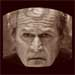
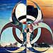

Fallujah: The 21st Century Guernica
Fallujah: The 21st Century Guernica
Where is the new Picasso to help citizens focus on the themes of our times?
by Saul Landau
 George and the Ten Commandments
George and the Ten Commandments
Can you be a good Christian if you fail the Ten Commandments test?
by Samuel Raider
 We're not in Lake Wobegon anymore
We're not in Lake Wobegon anymore
An adapted excerpt from the new book Homegrown Democrat
by Garrison Keillor
 Newest rules
Newest rules
The return of our favorite political thinker and social satirist, in which he continues to lay down the law.
by Bill Maher
Bedtime for Bozo
Americans seem to love leaders who share traits with birthday party clowns
by Adam Hunt
 Hypocrisy: The US Government's Biggest Problem
Hypocrisy: The US Government's Biggest Problem
A very simple and easy-to-understand explanation for why the world hates us.
by Charley Reese
Letter to a conservative young man
A thoughtful answer to a question about politics yields some answers about life.
by Mike Finley
Bush is my brother-in-law, The Shlub
Bush is like that loser brother-in-law that almost everybody has.
by Anon

Big Brother Bush
Orwell had it right. His prediction just came true twenty years late.
by Samuel Raider
How to determine who should get married
Separation of Church and State, George. Remember that phrase and say it at least ten times a day.
by Samuel Raider
The Political and the Personal
An account of how each has, sadly, imposed itself on the other.
by David Neiwert
 Reinstate the Draft: A Modest Proposal
Reinstate the Draft: A Modest Proposal
Make the war a personal danger to the average young American and the ranks of protesters for peace will multiply exponentially.
by Robert Casserly
 A Tale of Two Dialogues
A Tale of Two Dialogues
Two brief conversations that say a lot.
skreed
 I am a patriot too
I am a patriot too
There are more fundamental expressions of patriotism than wealth, power and nationalism. What does it mean to be an American?
by Samuel Raider
Why we hate Bush
It's the stolen election, stupid.
by Ted Rall
 Mr. Bush and the Flag
Mr. Bush and the Flag
It depends on what the meaning of "desecration" is.
by WaPo
New rules
In which one of our time's most original political thinkers and social satirist lays down the law.
by Bill Maher
That giant sucking sound
Suck, suck suck!
by Peter Lee
 A Day at the Races with The Tipster
A Day at the Races with The Tipster
For all practical purposes, does it matter if someone is a liar, misinformed, incompetent, or simply stupid?
by Fred Clark
 George Bush doesn't exist
George Bush doesn't exist
He's either an android or a genial, second-rate dinner theater actor.
by Rich Proctor
Tax cuts - a faith based initiative
For the Bush administration tax cuts are the true faith based initiative.
by Dwight Meredith

Weapons of mass distortion
The concept of WMD is dishonest. When they are in friendly hands we call them defence forces.
by Geoffrey Wheatcroft
Don't stand in the way of our joy
What better thing do we have to do in these months ahead than save the world?
by Doris Haddock
The United States of America has gone mad
Of course, this is just the opinion of one famous British novelist.
by John le Carre
The loud little handful
An observation on war, sheep, and the tyranny of the vocal minority.
by Mark Twain
The W stands for "Wrong-Way"
Why can't our leader start off in the right direction more often than not? Is he simply mislead?
By Rob Landeros
Fear TV
Anthrax and snipers and terrorists. Oh my!
By Rob Landeros
Armageddon tired of waiting
If I had my druthers, I'd go out in "the big one".
By Rob Landeros